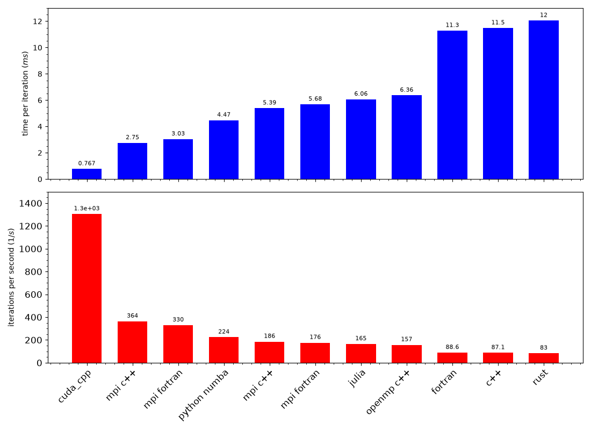
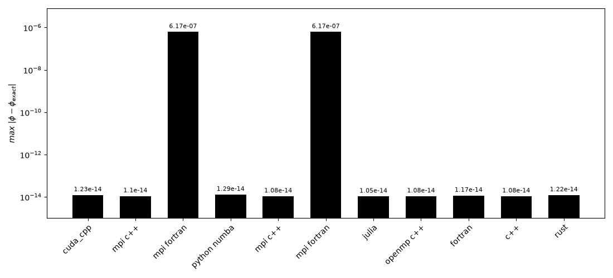
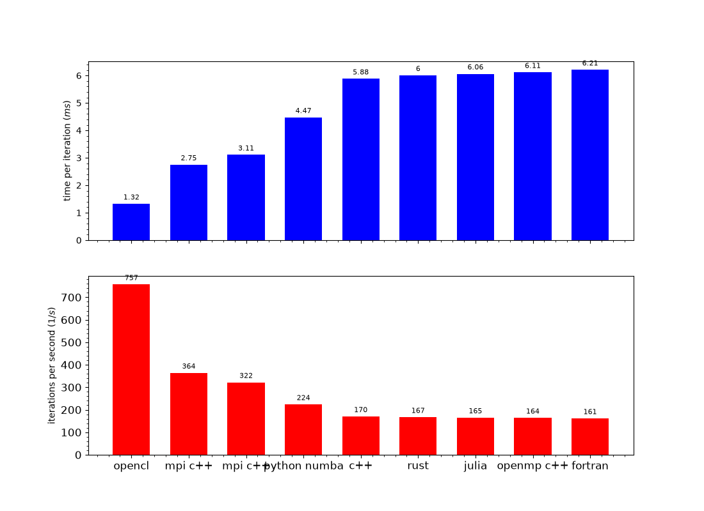
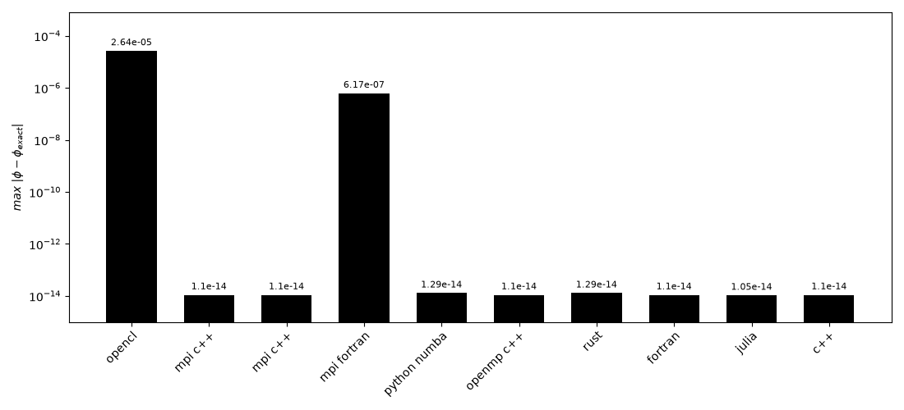

Wave Equation Solver Benchmarks
I keep returning to a small one-dimensional wave solver. It solves the linear advection equation, which is simple enough to understand completely but still exercises the parts of a real numerical code: grids, boundary conditions, time integration, file output, verification, builds, and performance measurement.
This is a continuing learning project, not a claim that one programming language is universally faster than another.
Why This Equation?
For a periodic sine wave, the solution translates without changing shape. That exact solution makes the benchmark useful: every numerical result can be compared with the analytical answer, so a quick run is not mistaken for a correct one.
dphi/dt = -c0 dphi/dx
phi(x, 0) = sin(2pi x)
phi_exact(x, t) = sin(2pi(x - c0 t))I measure the maximum error against that exact solution. When I add a language, library, parallel model, GPU implementation, build system, or output format, the problem and its accuracy check stay fixed.
Numerical Method
The solver uses a fourth-order central finite-difference approximation in space and a third-order Runge-Kutta method in time, a familiar combination from my research work with OpenSBLI. The periodic domain has 2,000,000 grid points, wave speed c0 = 0.5, a time step of 10-7, and 1,000 iterations.
The equation is deliberately modest. The value lies in being able to rewrite the whole solver without losing sight of the calculation, while still testing the engineering decisions around it.
One Problem, Several Implementations
The repository currently includes serial C++, Fortran, Julia, Python, Python with Numba, and Rust versions, alongside OpenMP C++, MPI C++, MPI Fortran, OpenCL C++, and CUDA C++ implementations.
- How does a language or compiler shape a simple array-based solver?
- What changes when work is shared between CPU threads, MPI ranks, or a GPU?
- How much do build configuration, floating-point precision, and output choices matter?
- Does an accelerated version still reproduce the analytical solution?
The CPU and CUDA C++ versions use double precision. The OpenCL version currently uses single precision, making its error larger and illustrating that speed and precision are engineering choices rather than afterthoughts.
Run It
Clone the repository, choose an implementation that matches your installed tools, and run that directory. The C++, CUDA, Fortran, OpenMP, MPI, OpenCL, and Rust directories use make; Julia and the Python variants run their source files directly.
git clone https://github.com/dekeract01/wavebench.git
cd wavebench/cpp
make runThe root generate_all.py script can build and run the configured suite, while plot_wave.py and plot_benchmarks.py generate the result plots.
Results




Reading the Benchmarks Responsibly
The plots report time per iteration, iterations per second, and maximum error. They describe a particular machine and configuration, not universal language rankings. CPU architecture, compiler version and flags, runtime libraries, thread and MPI-rank choices, GPU hardware, and numerical precision all affect the outcome.
The repository contains the current code, scripts, benchmark details, and results.